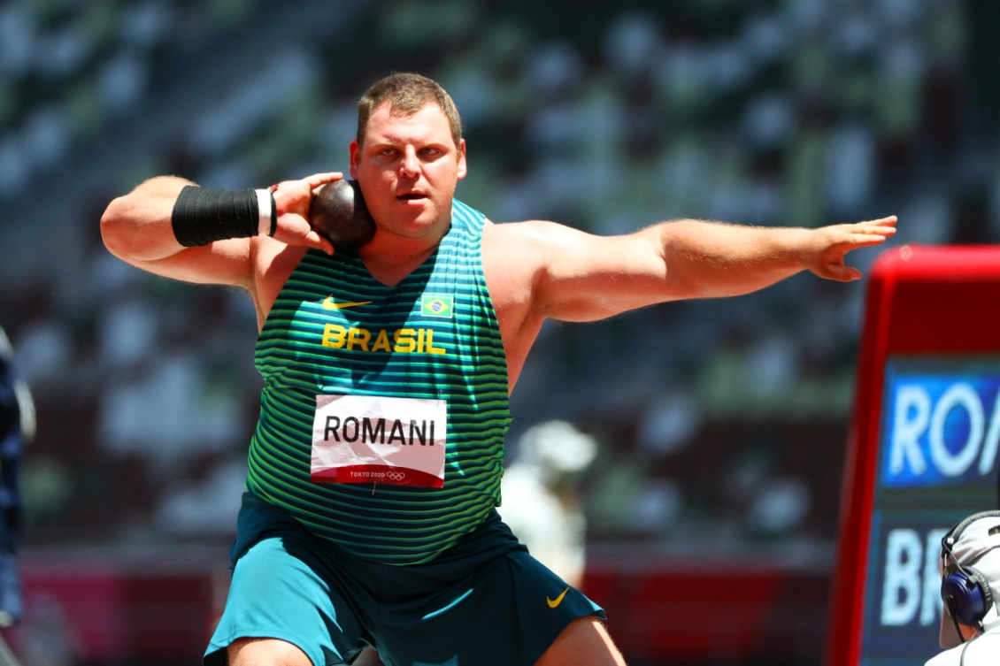

Categoria: Atletismo

Prova de campo em que o atleta lança um implemento (peso) a maior distância possível, partindo de uma região delimitada, geralmente um círculo. No contexto escolar, utiliza-se medicine ball, bolas leves ou pelotas.
Arremesso de peso adaptado (medicine ball de 1 a 2 kg, bola de borracha não muito grande, ou pelota), trena, área de lançamento demarcada com giz ou corda (círculo ou linha).
Desenvolver força de membros superiores, coordenação de tronco e pernas, e noção de ângulo de lançamento.
Variação: alterne o tamanho da bola, a distáncia e o alvo.
Progressão: comece com movimentos parados e acrescente deslocamento, tempo ou marcação leve.
Segurança: mantenha espaço livre entre os grupos e escolha bolas adequadas para a turma.
Faixa etária: com os menores, use bolas leves, alvos maiores e regras reduzidas.
Veja uma demonstração de Arremesso e adapte a proposta para a sua turma.